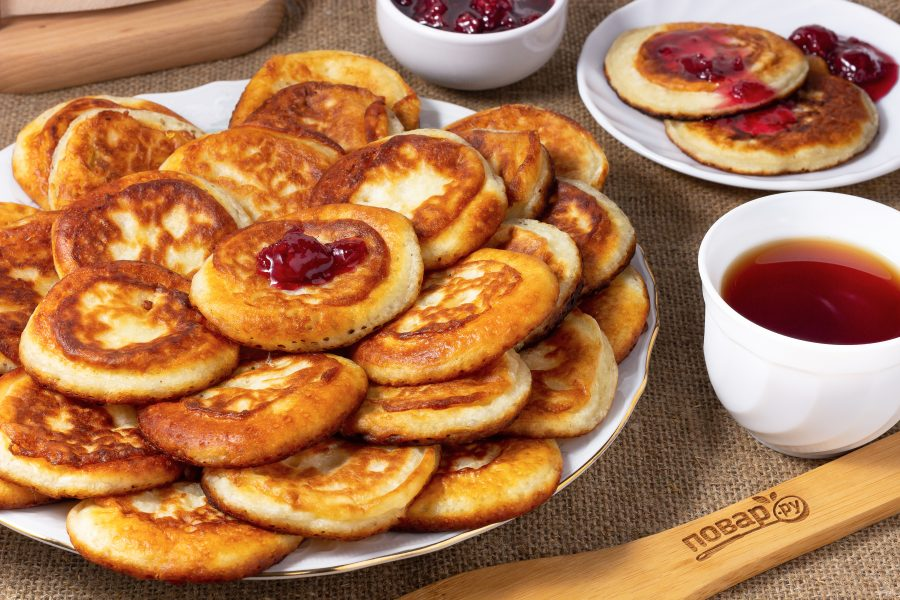

Бабушка
Не смотря на то, что мы были на расстоянии, мы с Бабушкой постоянно держали связь.
С Новым Годом, Бабуль, я очень люблю тебя и ценю твою порой слишком активную заботу обо мне...
Ниже представленны карточки воспоминаний:
Начальная школа
Наверное первое воспоминание о Бабуле это то как, она забирает меня из школы весной.
Обещает мне подарок за уже полученную пятерку.
Мы идем домой обедать вкусным приготовленным Бабой супом.

Оладушки и варенье
Самое отличительное блюдо у Бабушки - это оладушки.
В любое время дня и ночь могу их кушать.
Лето в Анапе
Как мы играем в карты на пляже, едим кукурузу за 50 рубей.
Резиновые игрушки, постоянные походы на рынок.
Всё это осталось в моей памяти навсегда.